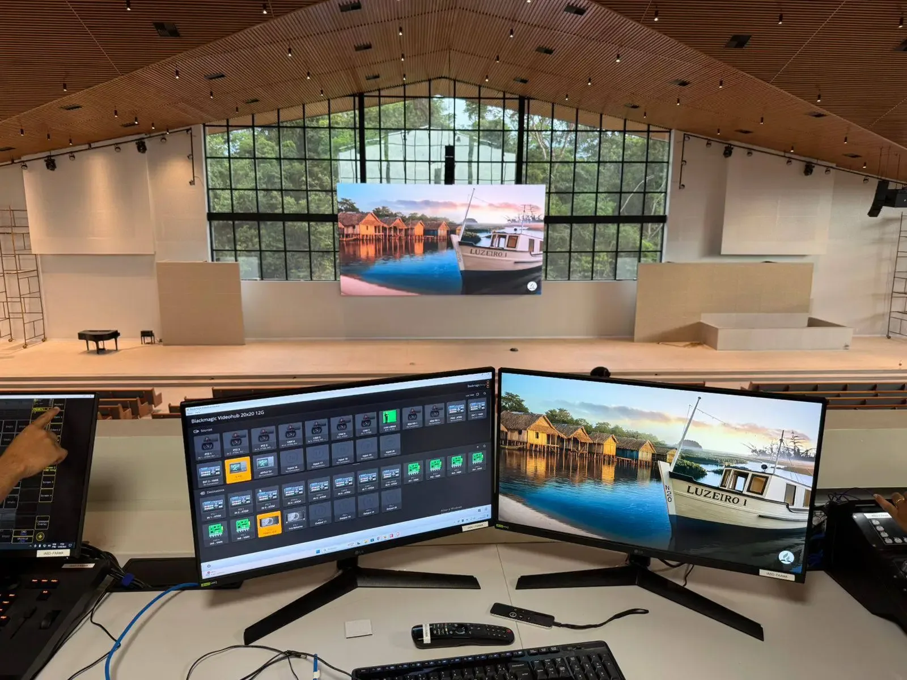

LED walls for churches. Clear from the back row, clean on the stream.
A church LED wall does two jobs at once: lyrics and the speaker’s face for the room, and a backdrop the livestream camera looks at. This page walks through sizing it to the sanctuary, choosing the pitch, side screens, the camera, and how it is built and installed.

Size the wall to the space, in whole cabinets.
Measure the area behind the stage the wall may fill: width, height, and how high its bottom edge has to sit so the front rows see over the platform. An LED wall is built from whole cabinets, so it comes out a little smaller than the space, never bigger.
A taller wall is not always better. The lower edge has to clear the band, the pulpit and the people standing on the platform, and the top edge has to stay in view from the balcony or the back rows.
Try your own space in the LED wall calculator.
| Space | Panel and cabinet | Wall you get |
|---|---|---|
| 5 × 3 mChurch stage example | 2.9 mm generic640 × 480 mm | 7 × 6 = 42 cabinets4.48 × 2.88 m1,547 × 996 px |
| 5 × 3 mSame space, i9 panel | i9 COB 1.86640 × 480 mm | 7 × 6 = 42 cabinets4.48 × 2.88 m2,408 × 1,548 px |
| 6 × 3.5 mChurch use, configurator | i9 COB 1.86640 × 480 mm | 9 × 7 = 63 cabinets5.76 × 3.36 m3,096 × 1,806 px |
Pick the pitch from both ends of the room.
Pixel pitch is the gap between pixels in millimetres. The front row sets the floor: closer than about 1 m per mm, people see the pixels. The middle and back of the room set the comfort: from about 3 m per mm (10 ft per mm) the picture looks smooth.
The suggestion is the largest pitch that passes both. A finer pitch than you need costs more and adds pixels the processor has to drive; a coarser one shows its grid to the front rows.
If the wall sits right behind the speaker in close-up camera shots, treat it as a camera backdrop: the configurator’s broadcast use keeps it under 2.6 mm.
| Front row | Most people | Limit | Suggested |
|---|---|---|---|
| 3 m | 8 m | min(3, 8 ÷ 3) = 2.67 mm | 2.6 mm |
| 4 m | 10 m | min(4, 10 ÷ 3) = 3.33 mm | 2.9 mm |
| 5 m | 14 m | min(5, 14 ÷ 3) = 4.67 mm | 3.9 mm |
| 6 m | 18 m | min(6, 18 ÷ 3) = 6.00 mm | 4.8 mm |
4.8 mm is the coarsest indoor pitch in the configurator’s list. Rules of thumb from i9’s pixel-pitch calculator: a range, not a hard limit.
Legible lyrics are a content job as much as a pitch job.
Lyrics stay readable when the text is large, high-contrast and short per slide. Build your lyric template at the wall’s real resolution, not 1920 × 1080, and check it from the last row before the first service.
IMAG, the speaker’s face on screen, needs a source that matches the wall’s shape. A 1.56:1 wall shows a 16:9 camera picture with bars or a crop; decide which in the processor or the switcher.
In a wide or deep room, two side screens bring IMAG and lyrics closer to the people at the sides and back, and leave the centre wall for the stage design.
- Each screen
- 3.5 × 2 m space
- Pitch · cabinet
- 2.6 mm generic · 500 × 500 mm
- Cabinets
- 7 × 4 = 28 per screen
- Wall
- 3.50 × 2.00 m · 1.75:1, near 16:9
- Resolution
- 1,344 × 768 px each
- Mounting
- Flown from truss
What the room sees and what the stream sees aren’t the same.
Refresh rate. An LED wall isn’t lit continuously: it refreshes many times a second. Your eyes blend that into a steady picture; a camera samples it with its shutter. When the refresh is low for the shutter speed, the stream shows dark bands or flicker the room never sees. A higher refresh rate gives the camera more refresh cycles in every frame.
Moiré. A wavy pattern appears when the camera sensor’s grid and the wall’s pixel grid interfere. It changes with the camera distance, the lens, the focus and the pitch, so moving any of them moves it.
Sync. With several cameras, a processor with a genlock input locks the wall to the same sync as the cameras. The configurator flags which processors have one.
That is why the test comes first: a real cabinet in front of your own camera and lens, at your shutter speed, before the order.
1.86mm
COB 1.86 Indoor Fixed
- Refresh
- 3,840 Hz
- Grayscale
- 14-bit
- Cabinet
- 640 × 480 mm
- Per cabinet
- 344 × 258 px, computed
- Use
- Indoor, fixed install
- Viewing
- min 1.86 m · comfortable 5.58 m
- Brightness
- To confirm with factory
- Weight, power
- To confirm with factory
How it’s mounted decides the cabinet.
The COB 1.86 is made for fixed installs. A wall that moves between rooms, campuses or outdoor events uses rental cabinets instead.
On the building wall
Brackets or a frame on the wall behind the stage. Permanent, the usual choice for a sanctuary.
Ground-stacked
On a mobile structure or frame, braced at the back. Can be moved, takes floor space behind the wall.
From truss
Hung from a truss or rigging points with hanging bars. Common for side screens and events.
Rental cabinets: 500 × 500 mm die-cast aluminium with quick locks, “the rental standard” in the configurator’s list; 500 × 1000 mm for taller walls. Structure loads and rigging are confirmed per project.
Built to order, quoted with the factory.
i9 doesn’t sell LED walls from stock. You size the wall in the configurator; i9 takes that spec to the factory and replies with a price and a lead time, for a church in any country.
i9TV, i9’s integration company, designs and installs LED walls together with sound and broadcast systems. Its church projects are documented on i9tv.com.br.
Who installs your wall, and what installation costs, depends on the country and the building. A specialist confirms it with the quote.
For the Seventh-day Adventist Church, North Brazil Union, i9TV integrated radio, podcast and TV: K-Array sound, Sennheiser microphones, an Allen & Heath desk, an LED panel and a broadcast system.
- Fronts
- Radio, podcast and TV
- Sound
- K-Array · Sennheiser · Allen & Heath
- Picture
- LED panel
- Signal
- Broadcast system
- LED size, pitch
- Not stated on the project page
Size your church wall, then ask for a quote.
The configurator opens on the church stage example: change the space and distances, see the processor and a 3D view, and send the spec.
Church LED wall questions.
The numbers come from the calculator’s rules; what the factory has to confirm says so.
What size LED wall does a church need?
Start from the space behind the stage, then fit whole cabinets into it. A 6 × 3.5 m space with i9’s COB 1.86 on 640 × 480 mm cabinets takes 9 × 7 = 63 cabinets: a real wall of 5.76 × 3.36 m at 3,096 × 1,806 px. The calculator does this for any space and cabinet.
What pixel pitch is right for a church?
It follows the front row and the back of the room: about 1 m of distance per mm of pitch at minimum, and 3 m per mm for comfort. Front row 4 m and most people at 10 m gives 2.9 mm; front row 5 m and most people at 14 m gives 3.9 mm.
Why does an LED wall flicker or show stripes on the livestream?
The wall refreshes many times per second and the camera samples it with its shutter; a low refresh rate can show as bands or flicker on camera even when the room sees a steady picture. Moiré is a different effect: the camera’s sensor grid interfering with the pixel grid, which changes with distance, lens and focus. Test a real cabinet with your own camera and lens before ordering.
Do we need side screens as well as the main wall?
In a wide or deep sanctuary, side screens bring the speaker’s face (IMAG) and the lyrics closer to the people at the sides and back. The configurator’s side IMAG pair example is two 3.5 × 2 m screens at 2.6 mm on 500 × 500 mm cabinets: 7 × 4 cabinets and 1,344 × 768 px each.
Fixed install or a mobile LED wall?
A wall that stays behind the stage is fixed on the building wall or a frame; i9’s COB 1.86 is made for fixed installs. If the wall moves between rooms or events, rental cabinets (500 × 500 mm, die-cast with quick locks) on a floor-standing structure or truss are the usual choice.
Who builds and installs the LED wall?
i9 builds LED walls to order: it takes your spec to the factory and replies with a price and lead time, for a church in any country. Who installs it, and the installation cost, is set per project with a specialist.
The rest of the church room.
Cameras, sound and the stream, from live listings.